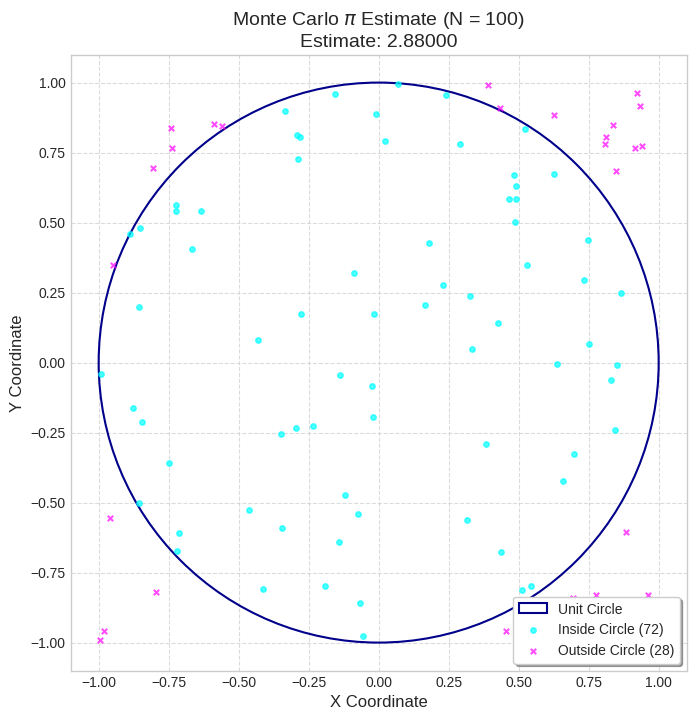
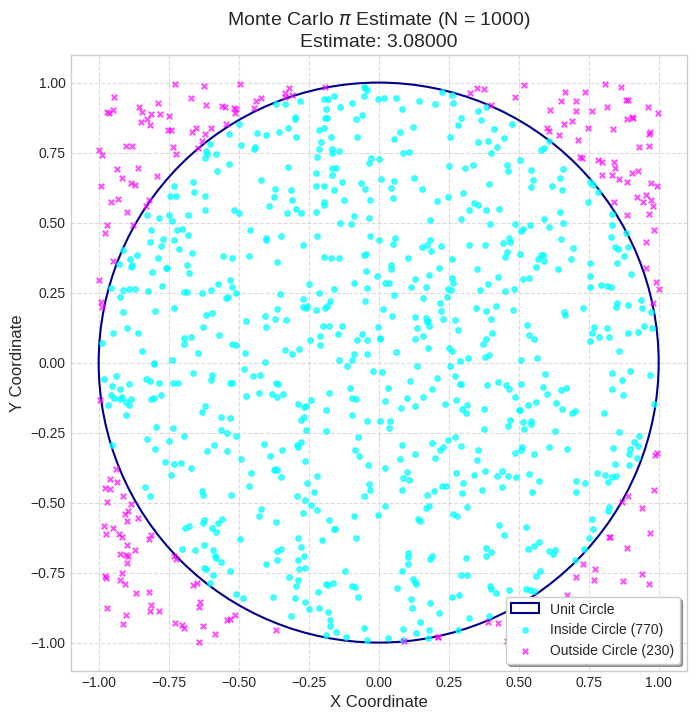
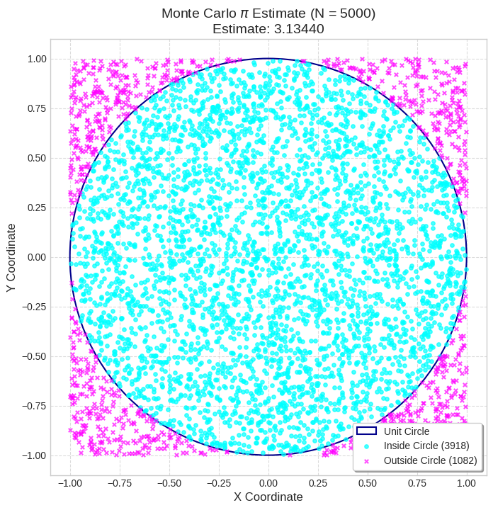
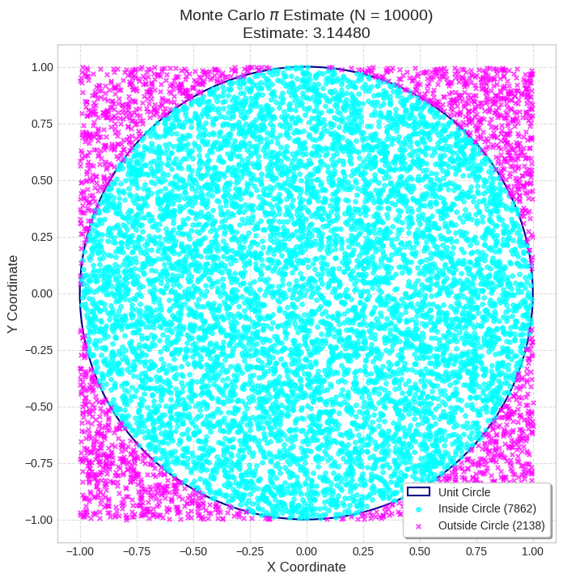
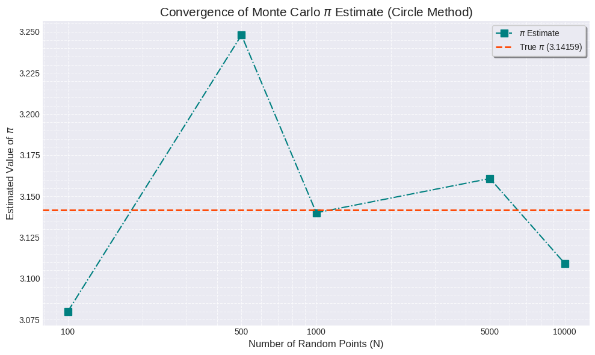
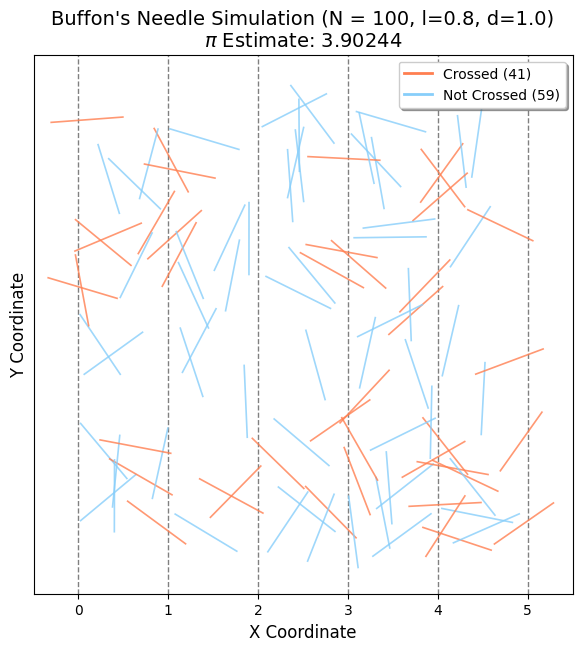
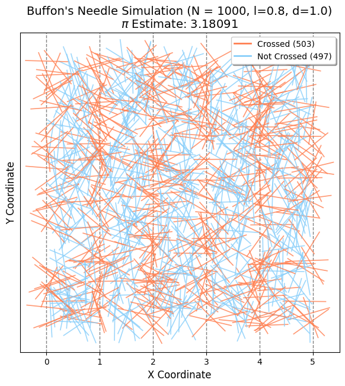
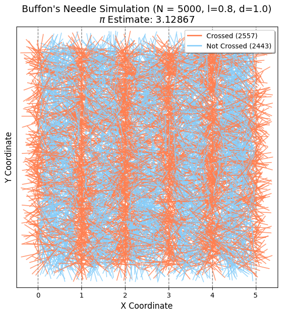
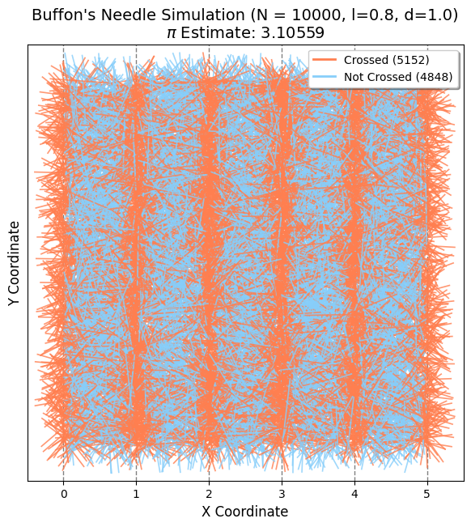
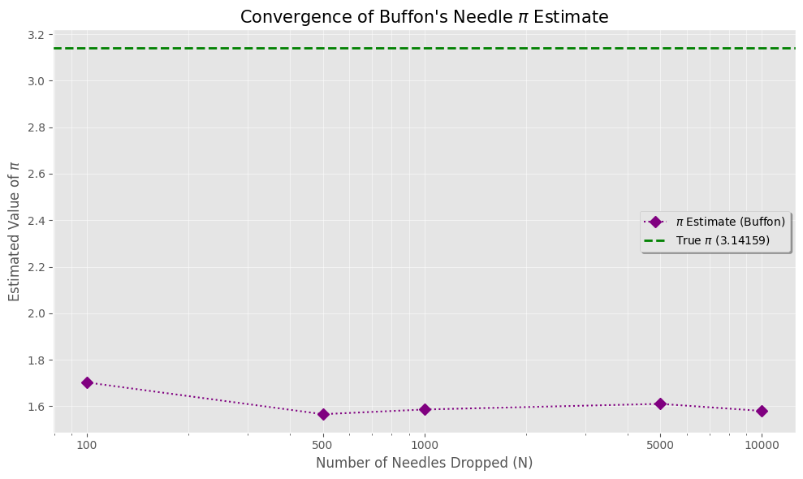

🎯 Estimating \(\pi\) Using Monte Carlo Methods
🔵 Part 1: Circle-Based Monte Carlo Method
📄 Theoretical Foundation
A unit circle (radius = 1) inscribed in a square of side length 2 has:
-
Circle area:
$$ A_{\text{circle}} = \pi r^2 = \pi $$ -
Square area:
$$ A_{\text{square}} = (2r)^2 = 4 $$
By randomly generating points in the square and checking if they fall inside the circle:
-
The ratio of points inside the circle approaches
$$ \frac{\pi}{4} $$ -
Therefore:
$$ \pi \approx 4 \cdot \frac{\text{Points in circle}}{\text{Total points}} $$





🧵 Part 2: Buffon’s Needle Simulation
📄 Theoretical Foundation
Buffon's Needle experiment estimates \(\pi\) by dropping a needle of length \(l\) on a plane with parallel lines spaced \(d\) units apart (\(l \leq d\)).
-
The probability that the needle crosses a line is:
$$ P = \frac{2l}{d\pi} $$ -
Rearranging gives:
$$ \pi \approx \frac{2l \cdot N}{d \cdot C} $$
where \(N\) is total drops and \(C\) is the number of crossings.
⚖️ Method Comparison
| Method | Intuition | Accuracy | Visualization |
|---|---|---|---|
| Circle-Based | Geometry-based ratio | Improves with \(N\) | Easy |
| Buffon’s Needle | Probability from physical experiment | Slower convergence | Moderate |
✅ Conclusion
Both methods can estimate \(\pi\), but the Circle-Based approach converges faster and is easier to implement and visualize. Buffon’s method is historically important and offers an elegant link between geometry and probability.




